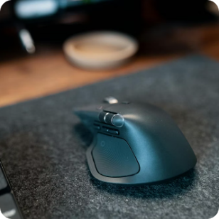
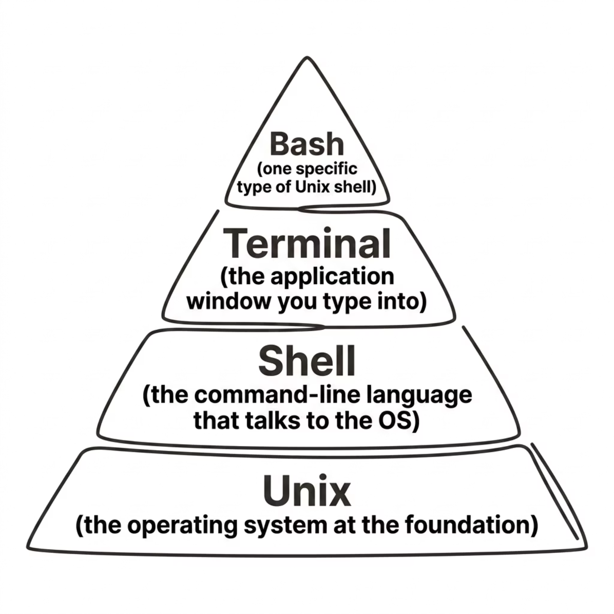
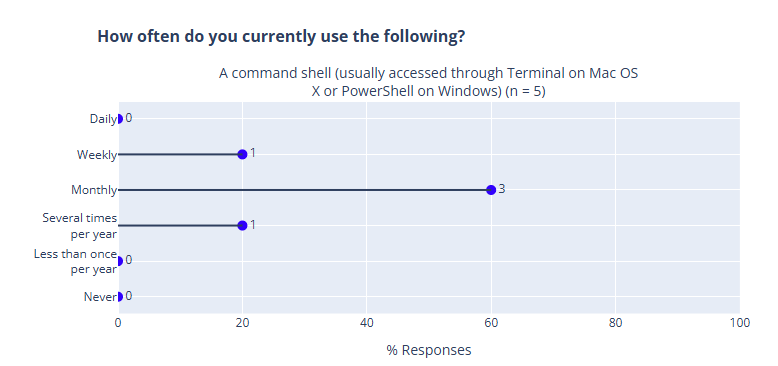

Software Carpentry Workshop
The Unix Shell
A command-line interface for working with files and automating repeated tasks.
Keyboard
The original text-based input method, which is direct and precise.
Touch Screens
Intuitive gestures for mobile and tablet environments.
Voice Recognition
Natural language input, growing but still limited in precision.

Mouse & GUI
Graphical interfaces made computing accessible to everyone.
CLI
Command-Line Interface: powerful, scriptable, and built for repetition.
The problem
Imagine you need to create 50 directories, rename hundreds of files, or run the same operation across many datasets. In a GUI, that means copy-paste, click-click-click — wasting time and energy.
The more repetitive the task, the greater the advantage of the CLI. A single command can replace hundreds of manual clicks.
Decades of proven use
The Unix shell has been around for over 50 years, older than most of its users today. It has survived because it works.
Unmatched Productivity
Its longevity is no accident. The Unix shell is one of the most productive programming environments ever created, enabling complex workflows with minimal effort.
Worth the Learning Curve
Graphical interfaces feel easier at first, but once you learn the terminal, you’ll wonder how you ever worked without it.
These terms are often used interchangeably, but they refer to distinct layers of the system.

Breaking it down
Unix — The operating system itself: the foundation everything runs on.
Shell — The “language” used to send commands to the OS.
Terminal — The application window where you interact with the shell.
Bash — A specific, widely used implementation of a Unix shell.
The exact tool depends on your operating system — but the commands you learn will work everywhere.
Git Bash — a lightweight Bash emulation that comes bundled with Git for Windows. It gives you a Unix-like environment on a Windows machine.
Unix Shell — the classic, native command-line environment. macOS and Linux ship with Bash (or Zsh) built right in. No extra installation needed.
This workshop is designed for beginners. No prior command-line experience is expected. We’ll start from the very basics and build up together.
No experience needed
We start from zero.
Hands-on practice
You’ll type real commands as we go.
Ask questions
There are no bad questions here.
How often do you currently use the command line?

1. “I want to learn how to manage my code with Git and how to collaborate with others on Git.”
2. “I want to learn everything about Unix shell and Git because they are new to me. What’s more important is that managing my data and codes in a good way can really help me to conduct all my research tasks.”
3. “Smoothly collaborating using Github.”
Who is Nelle?
Nelle Nemo is a marine biologist who has collected thousands of biological samples. She needs to process 1,520 files, and doing it by hand would take weeks.
By the end of this lesson, you’ll have the skills to help her:
Before we begin, download the sample data files we’ll use throughout the lesson. These contain the sample files Nelle needs to process.
📦 Download Link
Copy the link below in your browser to download the ZIP file containing all workshop data.
What’s Inside
Unzip the file to your Desktop or Home folder before the workshop starts.